Show code cell source
# !important formatting data for use with IQAASL
# when combined with previous data there are duplicate location names
# the locations in plastock data that have the same name as iqaasl data
# need to be changed so we can use the reporting scheme from IQAASL
change_names = ['preverenges', 'tolochenaz', 'versoix', 'vidy', 'cully']
plastock_cols = ['loc_date', 'date','slug','region', 'code', 'quantity', 'city', 'feature_name', 'feature_type','parent_boundary', 'pcs_m']
features = ['frequentation', 'situation', 'orientation', 'distance']
changeus = work_data[work_data.slug.isin(change_names)].copy()
donotchange = work_data[~work_data.slug.isin(change_names)].copy()
new_slug = {
'cully': 'cully-p',
'preverenges': 'preverenges-p',
'tolochenaz': 'tolochenaz-p',
'versoix':'versoix-p',
'vidy': 'vidy-p'}
# they have the same name as locations in iqaasl
changeus['new_slug'] = changeus.slug.apply(lambda x: new_slug[x])
changeus['slug'] = changeus.new_slug
changeus.drop('new_slug', inplace=True, axis=1)
# the plastock data with the converted names
wd_nn = pd.concat([changeus, donotchange])
# # plastock did not use the same inventory as iqaasl
# # here we select only the codes in the plastock inventory
# pcodes = wd_nn.code.unique()
# identify and remove codes for which there is no defintion
# if the code is not defined then it can not be used
t = [x for x in codes_ip if x not in codes.index]
wd_ni = wd_nn[~wd_nn.code.isin(t)].copy()
# ! aggregating plastic caps, fragmented plastics, fragmented foams !
# these items are not well divided into the composite subgroups
# for example people often know what a cap is, but whether it
# comes from a drink bottle or other type is not well considered
# we combine the subcategories into more comprehensive groups.
ti = rc.use_gfrags_gfoams_gcaps(wd_ni, codes)
# formatting data for reporting
# aggregate along all land-use and topo variables.
ti = ti.groupby(['échantillon', 'Plage', 'region', 'date', 'substrat', 'length', 'slug', 'code'], as_index=False).agg({'quantité':'sum'})
# !combinining with previous results!
# these are the default arguments for the report class
# the language maps gives the code definitions in english, german and french
# the top_label asserts the top level aggregation for the set of data defined by
# start, end dates and feature_name. These arguments are for the plastock data
language_maps = rc.language_maps()
top_label= ['feature_name', 'lac-leman']
# the default language is english in the report column class
# there are column names that need to be changed
new_names = {'échantillon': 'loc_date', 'pcs/m': 'pcs_m'}
ti.rename(columns={**new_names,'quantité': 'quantity'}, inplace=True)
# define the pcs/m column and the data to merge
ti['pcs_m'] = ti.quantity/ti.length
# adding and renaming columns according to reportclass requirements
# these values can be indexed on the IQAASL data
ti['city'] = ti.slug.apply(lambda x: city_map.loc[x])
ti['feature_name'] = 'lac-leman'
ti['feature_type'] = 'l'
ti['parent_boundary'] = 'rhone'
# ! adding feature columns to survey data !
# they can be merged on the Plage column and the index
# these are used for modeling
env_plastock = ti.merge(beach_data_f[features], left_on='Plage', right_index=True)
env_plastock = env_plastock[[*plastock_cols, *features, 'substrat']]
# ! the data for reporting !
ti_work = ti[plastock_cols].copy()
# this data is formatted to work with the reporting structure of IQAASL
# the landuse data is not included here.
ti_work = ti_work.groupby(plastock_cols, as_index=False).agg(psc.unit_agg)
ti_work['project']='Pla\'stock'
# merge the data and select only the current codes from plastock
txi = pd.concat([ghi, ti_work[[*plastock_cols, 'project']].copy()])
txi.reset_index(inplace=True)
txi = txi[txi.code.isin(ti_work.code.unique())]
# a report that includes both sets of data
boundaries = dict(start_date="2020-04-01", end_date="2023-01-01", feature_name="lac-leman", language="fr")
report_iq_pk = rc.ReportClass(txi.copy(), boundaries=boundaries, language="fr", lang_maps=language_maps, top_label=top_label)
# a report that includes just plastock data
boundaries = dict(start_date="2021-12-31", end_date="2023-01-01", feature_name="lac-leman", language="fr")
plastock_report = rc.ReportClass(ti_work.copy(), boundaries=boundaries, language="fr", lang_maps=language_maps, top_label=top_label)
display_language = plastock_report.language
display_language_map = plastock_report.lang_maps[display_language]
Résultats précédents#
Les derniers résultats de l’ASL se comprennent mieux dans le contexte des résultats précédents du lac. Nous supposons ici que le lecteur est familier avec le sujet des plastiques dans l’environnement et le désir populaire de réduire les plastiques dans l’environnement maritime. A partir de ces conclusions, nous demandons au lecteur de faire un autre saut intellectuel : Ce qui est préoccupant pour l’environnement maritime peut l’être aussi pour l’environnement d’eau douce. À la lumière des preuves non concluantes de la toxicité des plastiques, le Centre Commun de Recherche de l’UE (JRC) a adopté le principe de précaution et a fixé un objectif de densité de déchets d’environ 20 pièces pour 100 mètres de plage (Eu thresholds). Dans ce contexte, les actions de l’ASL et des autres associations présentes dans la collecte de ces données sont non seulement raisonnables mais essentielles pour comprendre le problème et identifier des solutions efficaces.
Introduction#
La petite histoire#
Les déchets sauvages sur les plages du Lac Léman font l’objet d’une surveillance depuis 2015. La campagne la plus récente avant Pla’stock, a été parrainée par l’Office fédéral de l’environnement (OFEV) de 2020 à 2021 (IQAASL). En 2017 et 2018, ce sont le WWF Suisse (WWF) et STOPPP qui ont assumé la responsabilité de la surveillance des déchets sur les plages du lac avec le Swiss Litter Report (SLR), (Swiss Litter Report). Cependant, la première tentative de quantifier la densité a été le Montreux Clean Beach Project (MCBP) de novembre 2015 à septembre 2016. Inspiré par Net Léman, La MCBP a été lancée et financée par une petite association locale (aujourd’hui disparue). L’objectif de ce premiere projet était d’appliquer les recommandations de l’UE pour la surveillance des déchets sur les rives du lac Léman (Guidance on Monitoring Marine Litter). Le solid-waste-team (SWT), un groupe d’étudiants de l’EPFL, prélève des échantillons à Saint-Sulpice (VD) chaque année en octobre depuis 2016. Ils sont le seul groupe à avoir des échantillons chaque année, y compris en 2023.
Interprétation des résultats : conseils de bon sens#
Les données doivent être considérées comme une estimation raisonnable de la quantité minimale de déchets sur le sol au moment de l’observation. Lorsque l’on compare les résultats d’une campagne/époch à l’autre, il est préférable de prendre en compte les objets connus du grand public et commun entre les épochs de consideration. Les sources de variance entre échantillon et entre époch sont nombreuses.
Il existe des différences entre les groupes d’échantillonnage.
Il existe des différences entre les lieux d’échantillonnage
Il existe des différences dans la détectabilité et l’apparence des objets du même code, qui sont dues aux effets de la décomposition.
Les enquêteurs sont des bénévoles et ont différents niveaux d’expérience ou des contraintes physiques qui limitent ce qui sera effectivement collecté, indentifié et compté.
Il n’existe pas de protocole convenu pour la région. Chaque groupe ou campagne interprète le protocole, (Guidance on Monitoring Marine Litter), au mieux de ses capacités et de ses ressources.
Les résultats de l’enquête répondent à la question suivante : Qu’est-ce que les participants sont susceptibles de trouver et quelle est la quantité qu’ils sont susceptibles de trouver ? C’est la réponse la plus honnête que l’on puisse tirer des données. À partir de ces éléments, il est possible d’estimer la quantité minimale et le type de déchets qu’une personne est susceptible de rencontrer sur la plage.
Pièces par mètre de rivage : Les déchets sauvages sur les plages sont mesurés en unités de déchets par mètre linéaire de rivage. Les relevés sont effectués entre la ligne d’eau (là où l’eau et la terre se rejoignent) et la ligne de dérive (la distance la plus éloignée de la ligne d’eau atteinte par les vagues), (Guidance on Monitoring Marine Litter). Cette méthode a été adoptée dès le début en Suisse, ce qui signifie que les 250 échantillons précédents du lac Léman ont été collectés et mesurés selon la méthode précédemment décrite.
Resumé#
Les résultats de Pla’stock (résulats) suggèrent que les quantités de certains déchets sauvages sont en baisse. Dans l’ensemble, l’équipe de l’ASL a rapporté une valeur médiane de 2 pcs/m contre 3,7 pcs/m dans le passé. Cette réduction est conforme aux conclusions de 2020 - 2021, bien qu’elle soit plus importante que prévu (SLR - IQAASL).
| MCBP | SLR | IQAASL | Solid-Waste-Team | Pla'stock | |
|---|---|---|---|---|---|
| Min | 0,38 | 0,05 | 0,16 | 1,02 | 0,10 |
| 25% | 2,50 | 1,36 | 1,81 | 4,76 | 0,78 |
| 50% | 4,39 | 4,40 | 3,73 | 7,97 | 2,00 |
| 75% | 8,16 | 8,42 | 7,29 | 13,28 | 4,57 |
| Max | 47,37 | 37,59 | 59,99 | 66,03 | 18,26 |
| Moyenne | 7,51 | 6,56 | 7,21 | 13,10 | 3,42 |
| Écart-type | 8,75 | 7,76 | 10,47 | 16,02 | 3,66 |
| Échantillons | 91 | 44 | 93 | 20 | 98 |
| Total | 28'645 | 8'864 | 21'839 | 8'173 | 27'493 |
Les plus courants#
La plus forte diminution concernait les objets associés à la consommation personnelle sur la plage (mégots de cigarettes, emballages de snacks et bouchons de bouteilles en plastique). La baisse marquée de la densité des cotons-tiges en plastique (0,13 pcs/m contre 0,03 pcs/m) était inattendue et pourrait être attribuée à l’interdiction de la vente de ces articles en France (Interdiction France).
Les articles les plus courants de Pla’stock (plus courants) figuraient déjà parmi les plus courants du lac et six figurent dans la liste des 15 premiers objets OSPAR, (correspondences).
| MCBP | SLR | IQAASL | Solid-Waste-Team | Pla'stock | Léman | |
|---|---|---|---|---|---|---|
| Pellets industriels (gpi) | 0,00 | 0,00 | 0,00 | 0,00 | 0,00 | 0,00 |
| Mégots et filtres à cigarettes | 1,04 | 0,55 | 0,44 | 0,91 | 0,15 | 0,47 |
| Emballages de bonbons, de snacks | 0,23 | 0,33 | 0,20 | 0,56 | 0,15 | 0,21 |
| Bâtonnets de sucette | 0,03 | 0,04 | 0,03 | 0,09 | 0,02 | 0,03 |
| Mousse de plastique pour l'isolation thermique | 0,00 | 0,00 | 0,09 | 0,00 | 0,00 | 0,00 |
| Déchets de construction en plastique | 0,03 | 0,00 | 0,05 | 0,22 | 0,00 | 0,00 |
| Coton-tige | 0,14 | 0,29 | 0,12 | 0,53 | 0,03 | 0,13 |
| Couvercles en plastique bouteille: g21, g22, g23, g24 | 0,21 | 0,14 | 0,10 | 0,35 | 0,04 | 0,13 |
| Fragments de polystyrène expansé: g81, g82, g83 | 0,71 | 0,21 | 0,22 | 0,92 | 0,07 | 0,23 |
| Fragments de plastique: g80, g79, g78, g77, g76, g75 | 0,51 | 0,28 | 0,52 | 1,50 | 0,72 | 0,55 |
La densité des plastiques fragmentés (Gfrags) a légèrement augmenté (0,68 pcs/m contre 0,72 pcs/m). La catégorie des Gfrags est une catégorie fourre-tout pour les objets en plastique qui ne peuvent pas être identifiés positivement comme appartenant à une catégorie de produit spécifique. Les participants qui ne sont pas sûrs de l’utilisation d’un objet classifient l’objet comme Gfrags. Cette seule catégorie représentait 41 % du nombre total d’objets trouvés en 2022 contre 15 % en 2021 et 8 % en 2018 (Swiss litter report). Considérant qu’il y a également eu des baisses significatives dans les plastiques de construction et les feuilles industrielles en 2022, il est probable que des objets qui auraient été classifiés comme plastiques de construction ou feuilles industrielles aient été classifiés comme Gfrags. (Plus courants de Pla’stock-IQAASL)
Note
Les protections féminines et applicateurs de tampons, des éléments importants parmi les objets les plus courants d’OSPAR et d’IQAASL, n’ont pas été identifiées lors des enquêtes Pla’stock. Auparavant, ils étaient présents dans 20 % des enquêtes. Ces objets font-ils partie des restrictions de vente en France ?
Densité des objets par utilisation#
Le type d’utilité est basé sur l’utilisation de l’objet avant qu’il ne soit jeté ou sur la description de l’objet si l’utilisation initiale est indéterminée. Les objets trouvés sont classés dans l’une des 260 catégories prédéfinies. Les catégories sont regroupées en fonction de leur utilisation ou de leur description, pour plus d’information : utilité.
A l’exception de deux catégories, les résultats de Pla’stock sont inférieurs à la moyenne historique.
| MCBP | SLR | IQAASL | Solid-Waste-Team | Pla'stock | Léman | |
|---|---|---|---|---|---|---|
| Agriculture | 0,16 | 0,15 | 0,10 | 0,23 | 0,00 | 0,05 |
| Nourriture et boissons | 0,47 | 0,61 | 0,41 | 0,94 | 0,22 | 0,37 |
| Infrastructures | 0,72 | 0,23 | 0,50 | 1,41 | 0,11 | 0,40 |
| Micro-plastiques (< 5mm) | 0,00 | 0,00 | 0,07 | 0,00 | 0,10 | 0,00 |
| Emballage non alimentaire | 0,21 | 0,17 | 0,13 | 0,44 | 0,04 | 0,15 |
| Articles personnels | 0,03 | 0,06 | 0,06 | 0,10 | 0,03 | 0,05 |
| Morceaux de plastique | 0,51 | 0,28 | 0,52 | 1,50 | 0,72 | 0,55 |
| Loisirs | 0,12 | 0,04 | 0,12 | 0,21 | 0,05 | 0,08 |
| Tabac | 1,18 | 0,65 | 0,51 | 1,01 | 0,15 | 0,51 |
| Non classé | 0,00 | 0,00 | 0,00 | 0,00 | 0,00 | 0,00 |
| Eaux usées | 0,16 | 0,34 | 0,14 | 0,74 | 0,04 | 0,15 |
Différences entre les types de plage#
Section: conditions d’échantillonnage
Les enquêteurs ont classé les conditions à chaque emplacement d’échantillonnage selon quatre catégories :
distance au parking, du plus proche au plus éloigné (1-4)
utilisation : faible, moyenne, élevée (1-3)
substrat : sable fin à cailloux (1-4)
situation : campagne ou urbain (1-2)
Les variables de distance, de substrat et d’utilisation ont été combinées en deux groupes chacune. Cela a permis de réduire la covariance entre certaines variables et de maintenir le regroupement logique prévu (Corrélation des conditions de prélèvement).
Les lieux avec une plage de sable avaient la valeur médiane la plus élevée, soit 5,24 pcs/m pour 27 échantillons, suivis de près par les plages avec les taux d’utilisation les plus élevés, soit 3,4 pcs/m pour 55 échantillons. Les lieux classés comme urbains avaient une valeur médiane de 2,89 pour 31 échantillons, contre 1,63 pcs/m pour les lieux en campagne (67 échantillons). Mais, l’échantillon moyenne attendu est plus élevé dans les localités désignées comme étant à la campagne (3.46 pcs/m contre 3,33 pcs/m). Á la campagne, on s’attend à trouver plus de Gfrags et de pellets industriels (GPI) en % du total. Dans les villes, nous nous attendons à trouver plus de bouts de cigarettes et d’emballages de snacks par échantillon. Des prédictions ont été faites en utilisant différentes combinaisons de catégories à l’aide du régresseur de la forêt aléatoire (Random forest) et d’une approximation de la grille bayésienne (Grid approximations).
Régions#
Le lac est couramment divisé en trois régions. Ces régions définissent les courants dominants et la profondeur moyenne.
| Grand lac | Haut lac | Petit lac | Léman | |
|---|---|---|---|---|
| Pellets industriels (gpi) | 0,00 | 0,00 | 0,00 | 0,00 |
| Mégots et filtres à cigarettes | 0,85 | 0,81 | 0,11 | 0,66 |
| Emballages de bonbons, de snacks | 0,39 | 0,23 | 0,17 | 0,25 |
| Bâtonnets de sucette | 0,04 | 0,04 | 0,00 | 0,03 |
| Mousse de plastique pour l'isolation thermique | 0,00 | 0,00 | 0,00 | 0,00 |
| Déchets de construction en plastique | 0,04 | 0,06 | 0,00 | 0,04 |
| Coton-tige | 0,34 | 0,15 | 0,07 | 0,16 |
| Couvercles en plastique bouteille: g21, g22, g23, g24 | 0,17 | 0,18 | 0,08 | 0,16 |
| Fragments de polystyrène expansé: g81, g82, g83 | 0,23 | 0,54 | 0,16 | 0,40 |
| Fragments de plastique: g80, g79, g78, g77, g76, g75 | 0,84 | 0,33 | 0,33 | 0,52 |
Les résultats régionaux de Pla’stock montrent que la réduction la plus importante des mégots de cigarettes et des emballages de snacks a eu lieu dans les régions du Grand lac et du Haut lac. Les augmentations des plastiques fragmentés signalés se situent dans les régions du Grand Lac et du Petit Lac.
| Grand lac | Haut lac | Petit lac | Léman | |
|---|---|---|---|---|
| Pellets industriels (gpi) | 0,00 | 0,00 | 0,00 | 0,00 |
| Mégots et filtres à cigarettes | 0,16 | 0,13 | 0,17 | 0,15 |
| Emballages de bonbons, de snacks | 0,14 | 0,15 | 0,13 | 0,15 |
| Bâtonnets de sucette | 0,03 | 0,00 | 0,00 | 0,02 |
| Mousse de plastique pour l'isolation thermique | 0,00 | 0,02 | 0,00 | 0,00 |
| Déchets de construction en plastique | 0,00 | 0,00 | 0,00 | 0,00 |
| Coton-tige | 0,04 | 0,06 | 0,02 | 0,03 |
| Couvercles en plastique bouteille: g21, g22, g23, g24 | 0,04 | 0,05 | 0,02 | 0,04 |
| Fragments de polystyrène expansé: g81, g82, g83 | 0,12 | 0,17 | 0,01 | 0,07 |
| Fragments de plastique: g80, g79, g78, g77, g76, g75 | 1,15 | 0,23 | 0,66 | 0,72 |
Conclusions#
Les endroits où les niveaux de déchets à usage unique et de mégots de cigarettes sur la plage sont historiquement élevés devraient connaître des comptages réduits par rapport aux niveaux historiques. Nous pouvons estimer que la médiane de l’échantillon pour 2024 se situe quelque part entre 2,0 et 3,63 pcs/m. Les sites dotés d’un substrat de gravier peuvent présenter des valeurs inférieures de produits consommables, mais des quantités accrues de plastiques fragmentés. En général, les sites qui ont des niveaux historiquement élevés de plastiques fragmentés ne remarqueront pas de réduction et verront très probablement une augmentation du nombre de plastiques fragmentés, mais une diminution des quantités de cotons-tiges et de produits d’hygiène féminine.
Si les restrictions en France ont un effet positif sur le nombre de cotons-tiges et de produits d’hygiène féminine, les réductions observées en 2022 devraient se poursuivre pour ces objets. Cependant, les résultats de le Solid-waste-team pour 2023 ne montrent pas de telles réductions (Testing 2023 predictions).
Résultats Pla’stock#
La médiane des déchets par mètre (pcs/m) pour l’ensemble des 98 échantillons était de 2, soit 200 déchets pour 100 mètres. Cependant, selon l’urbanisation de la zone environnante, les taux d’utilisation estimés et le type de substrat, les taux attendus peuvent varier.
| pcs_m | |
|---|---|
| label | lac-leman |
| 25% | 0,78 |
| 50% | 2,00 |
| 75% | 4,57 |
| Échantillons | 98 |
| Max | 18,26 |
| Moyenne | 3,42 |
| Min | 0,10 |
| Écart-type | 3,66 |
| Total | 27'493 |
L’échantillonnage était planifié trimestriellement, commençant en janvier 2022. À quelques exceptions près, chaque emplacement était échantillonné quatre fois au cours de la période de 12 mois. Les études précédentes sur le lac étaient mensuelles ou aléatoires.
Table RP-6: Distribution des résultats de l’ensemble de l’échantillons Pla’stock
Les objets les plus courants Pla’stock#
Définition des objets les plus courants#
Les objets les plus courants peuvent être sélectionnés de plusieurs manières. On peut également les appeler les objets d’intérêt. Dans le cadre de ce rapport, nous nous concentrons sur les objets qui représentent une proportion plus importante des résultats que les autres. Nous avons utilisé deux critères de sélection : i. la quantité, ii. le taux d’échec.
Quanité: Si un objet a une quantité totale qui le place dans les dix premiers, il est considéré comme courant.
Taux d’échec: Si un objet a été trouvé dans au moins la moitié des échantillons, il est ÉGALEMENT considéré comme courant.
Par conséquent, pour cette étude, les ‘objets les plus courants’ sont ceux qui se trouvent soit dans les dix premiers en termes de nombre total de pièces de déchets ET/OU qui ont été trouvés dans au moins 50% des enquêtes. Pour Pla’stock, les objets les plus courants représentent 89% du montant total ou 24’156/27’493.
| quantité | % du total | pcs/m | taux d'échec | |
|---|---|---|---|---|
| Fragments de plastique: g80, g79, g78, g77, g76, g75 | 11'221 | 0,41 | 0,72 | 0,97 |
| Mégots et filtres à cigarettes | 3'089 | 0,11 | 0,15 | 0,79 |
| Emballages de bonbons, de snacks | 2'080 | 0,08 | 0,15 | 0,74 |
| Fragments de plastique angulaires <5mm | 1'926 | 0,07 | 0,00 | 0,41 |
| Pellets industriels (gpi) | 1'526 | 0,06 | 0,00 | 0,36 |
| Fragments de polystyrène expansé: g81, g82, g83 | 1'399 | 0,05 | 0,07 | 0,72 |
| Couvercles en plastique bouteille: g21, g22, g23, g24 | 1'070 | 0,04 | 0,04 | 0,65 |
| Coton-tige | 1'040 | 0,04 | 0,03 | 0,54 |
| Mousse de plastique pour l'isolation thermique | 406 | 0,01 | 0,00 | 0,38 |
| Déchets de construction en plastique | 380 | 0,01 | 0,00 | 0,24 |
| Bâtonnets de sucette | 379 | 0,01 | 0,02 | 0,54 |
Les plus courants par ville#
La densité médiane des objets les plus courants n’est pas la même pour chaque emplacement/municipalité, ce qui suggère une répartition géographiquement inégale de ces objets.
Résultats de Amphion à Hermance :
| Amphion | Anthy | Aubonne | Bouveret | Clarens | Crans | Cully | Excenevex | Genève | Gland | Grangettes | Hermance | Léman | |
|---|---|---|---|---|---|---|---|---|---|---|---|---|---|
| Fragments de plastique angulaires <5mm | 0,00 | 0,00 | 0,03 | 0,68 | 0,00 | 0,00 | 0,00 | 0,89 | 0,46 | 0,00 | 0,31 | 0,00 | 0,00 |
| Pellets industriels (gpi) | 0,00 | 0,01 | 0,00 | 0,42 | 0,02 | 0,00 | 0,00 | 0,05 | 0,27 | 0,09 | 0,27 | 0,00 | 0,00 |
| Mégots et filtres à cigarettes | 0,13 | 0,06 | 0,19 | 0,43 | 1,19 | 0,00 | 0,06 | 0,36 | 0,36 | 0,11 | 0,34 | 0,12 | 0,15 |
| Emballages de bonbons, de snacks | 0,43 | 0,00 | 0,08 | 0,43 | 0,24 | 0,05 | 0,00 | 0,13 | 0,16 | 0,00 | 1,67 | 0,02 | 0,15 |
| Bâtonnets de sucette | 0,12 | 0,01 | 0,01 | 0,15 | 0,05 | 0,00 | 0,00 | 0,06 | 0,00 | 0,00 | 0,00 | 0,00 | 0,02 |
| Mousse de plastique pour l'isolation thermique | 0,02 | 0,00 | 0,00 | 0,02 | 0,31 | 0,00 | 0,00 | 0,00 | 0,01 | 0,00 | 0,68 | 0,00 | 0,00 |
| Déchets de construction en plastique | 0,00 | 0,00 | 0,00 | 0,49 | 0,02 | 0,00 | 0,00 | 0,00 | 0,01 | 0,00 | 0,24 | 0,00 | 0,00 |
| Coton-tige | 0,70 | 0,02 | 0,00 | 0,19 | 0,27 | 0,00 | 0,00 | 0,00 | 0,01 | 0,02 | 0,55 | 0,00 | 0,03 |
| Couvercles en plastique bouteille: g21, g22, g23, g24 | 0,65 | 0,00 | 0,07 | 0,41 | 0,05 | 0,00 | 0,06 | 0,06 | 0,06 | 0,00 | 0,33 | 0,00 | 0,04 |
| Fragments de polystyrène expansé: g81, g82, g83 | 0,45 | 0,01 | 0,03 | 0,30 | 0,21 | 0,00 | 0,00 | 0,09 | 0,04 | 0,48 | 1,31 | 0,00 | 0,07 |
| Fragments de plastique: g80, g79, g78, g77, g76, g75 | 2,82 | 0,30 | 0,24 | 2,18 | 1,34 | 0,14 | 0,14 | 5,17 | 0,84 | 0,63 | 5,79 | 0,25 | 0,72 |
Résultats de Lugrin à Vidy :
| Lugrin | Lutry | Meillerie | Préverenges | Rolle | Saint-Disdille | Savonière | Tolochenaz | Tougues | Versoix | Vevey | Vidy | Léman | |
|---|---|---|---|---|---|---|---|---|---|---|---|---|---|
| Fragments de plastique angulaires <5mm | 0,00 | 0,00 | 0,04 | 0,00 | 0,61 | 0,02 | 0,00 | 0,00 | 0,02 | 0,00 | 0,00 | 0,18 | 0,00 |
| Pellets industriels (gpi) | 0,00 | 0,00 | 0,00 | 0,82 | 0,00 | 0,00 | 0,00 | 0,00 | 0,00 | 0,00 | 0,00 | 0,15 | 0,00 |
| Mégots et filtres à cigarettes | 0,09 | 0,00 | 0,08 | 0,42 | 0,66 | 0,34 | 0,19 | 0,00 | 0,54 | 0,00 | 0,04 | 1,58 | 0,15 |
| Emballages de bonbons, de snacks | 0,31 | 0,05 | 0,00 | 0,26 | 0,21 | 0,62 | 0,29 | 0,10 | 0,10 | 0,20 | 0,05 | 0,65 | 0,15 |
| Bâtonnets de sucette | 0,02 | 0,25 | 0,00 | 0,01 | 0,01 | 0,08 | 0,07 | 0,01 | 0,02 | 0,00 | 0,00 | 0,06 | 0,02 |
| Mousse de plastique pour l'isolation thermique | 0,00 | 0,00 | 0,02 | 0,00 | 0,00 | 0,07 | 0,00 | 0,00 | 0,00 | 0,08 | 0,00 | 0,06 | 0,00 |
| Déchets de construction en plastique | 0,01 | 0,00 | 0,00 | 0,01 | 0,00 | 0,01 | 0,00 | 0,00 | 0,00 | 0,00 | 0,00 | 0,00 | 0,00 |
| Coton-tige | 0,14 | 0,00 | 0,02 | 0,06 | 0,00 | 0,23 | 0,15 | 0,00 | 0,00 | 0,15 | 0,00 | 0,30 | 0,03 |
| Couvercles en plastique bouteille: g21, g22, g23, g24 | 0,07 | 0,04 | 0,00 | 0,03 | 0,01 | 0,31 | 0,14 | 0,00 | 0,00 | 0,07 | 0,01 | 0,16 | 0,04 |
| Fragments de polystyrène expansé: g81, g82, g83 | 0,46 | 0,09 | 0,20 | 0,18 | 0,16 | 0,15 | 0,02 | 0,01 | 0,05 | 0,01 | 0,00 | 0,01 | 0,07 |
| Fragments de plastique: g80, g79, g78, g77, g76, g75 | 0,49 | 1,72 | 0,18 | 2,40 | 1,15 | 1,95 | 0,78 | 0,21 | 0,31 | 1,05 | 0,05 | 1,63 | 0,72 |
Les objets trouvés en fonction de leur utilisation#
Le type d’utilité est basé sur l’utilisation de l’objet avant qu’il ne soit jeté ou sur la description de l’objet si l’utilisation initiale est indéterminée. Les objets trouvés sont classés dans l’une des 260 catégories prédéfinies. Les catégories sont regroupées en fonction de leur utilisation ou de leur description.
Eaux usées : objets rejetés par les stations d’épuration, y compris les objets susceptibles d’être jetés dans les toilettes.
Microplastiques (< 5 mm) : plastiques fragmentés et résines plastiques de préproduction.
Infrastructure : objets liés à la construction et à l’entretien des bâtiments, des routes et des réseaux d’eau et d’électricité.
Alimentation et boisson : tous les matériaux liés à la consommation de nourriture et de boissons.
Agriculture : principalement des feuilles industrielles, par exemple, paillis et bâches de culture, serres, fumigation du sol, films d’emballage de balles. Comprend les plastiques durs pour les clôtures agricoles, les pots de fleurs, etc.
Tabac : principalement des filtres de cigarettes, y compris tous les matériaux liés au tabagisme.
Loisirs : objets liés au sport et aux loisirs, par exemple, pêche, chasse, randonnée, etc.
Emballages non alimentaires et non liés au tabac : matériaux d’emballage non identifiés comme étant liés à la nourriture, aux boissons ou au tabac.
Fragments de plastique : morceaux de plastique d’origine ou d’utilisation indéterminée.
Objets personnels : accessoires, articles d’hygiène et vêtements.
Pour des informations détaillées sur la composition des groupes, consultez le rappor fédérale (IQAASL codegroups).
Résultats de Amphion à Hermance :
| Amphion | Anthy | Aubonne | Bouveret | Clarens | Crans | Cully | Excenevex | Genève | Gland | Grangettes | Hermance | Léman | |
|---|---|---|---|---|---|---|---|---|---|---|---|---|---|
| Agriculture | 0,00 | 0,00 | 0,00 | 0,00 | 0,00 | 0,00 | 0,00 | 0,00 | 0,00 | 0,00 | 0,01 | 0,00 | 0,00 |
| Nourriture et boissons | 0,70 | 0,01 | 0,17 | 0,84 | 0,31 | 0,05 | 0,00 | 0,21 | 0,20 | 0,02 | 2,02 | 0,04 | 0,22 |
| Infrastructures | 0,51 | 0,01 | 0,07 | 0,92 | 0,64 | 0,00 | 0,00 | 0,10 | 0,10 | 0,65 | 2,54 | 0,02 | 0,11 |
| Micro-plastiques (< 5mm) | 0,41 | 0,01 | 0,15 | 1,46 | 0,05 | 0,00 | 0,06 | 2,16 | 1,26 | 0,09 | 1,99 | 0,00 | 0,10 |
| Emballage non alimentaire | 0,75 | 0,00 | 0,07 | 0,41 | 0,05 | 0,00 | 0,06 | 0,06 | 0,07 | 0,00 | 0,33 | 0,02 | 0,04 |
| Articles personnels | 0,07 | 0,02 | 0,00 | 0,05 | 0,04 | 0,00 | 0,03 | 0,02 | 0,14 | 0,00 | 0,11 | 0,02 | 0,03 |
| Morceaux de plastique | 2,82 | 0,30 | 0,24 | 2,18 | 1,34 | 0,14 | 0,14 | 5,17 | 0,84 | 0,63 | 5,79 | 0,25 | 0,72 |
| Loisirs | 0,17 | 0,02 | 0,03 | 0,14 | 0,05 | 0,00 | 0,06 | 0,06 | 0,14 | 0,00 | 0,17 | 0,00 | 0,05 |
| Tabac | 0,13 | 0,06 | 0,19 | 0,43 | 1,19 | 0,00 | 0,06 | 0,37 | 0,36 | 0,11 | 0,34 | 0,12 | 0,15 |
| Non classé | 0,00 | 0,00 | 0,00 | 0,00 | 0,00 | 0,00 | 0,00 | 0,00 | 0,00 | 0,00 | 0,00 | 0,00 | 0,00 |
| Eaux usées | 0,85 | 0,03 | 0,00 | 0,25 | 0,28 | 0,00 | 0,00 | 0,02 | 0,02 | 0,04 | 0,66 | 0,00 | 0,04 |
Résultats de Lugrin à Vidy :
| Lugrin | Lutry | Meillerie | Préverenges | Rolle | Saint-Disdille | Savonière | Tolochenaz | Tougues | Versoix | Vevey | Vidy | Léman | |
|---|---|---|---|---|---|---|---|---|---|---|---|---|---|
| Agriculture | 0,03 | 0,00 | 0,00 | 0,00 | 0,00 | 0,32 | 0,00 | 0,00 | 0,00 | 0,00 | 0,00 | 0,00 | 0,00 |
| Nourriture et boissons | 0,36 | 0,32 | 0,00 | 0,28 | 0,21 | 0,79 | 0,43 | 0,10 | 0,13 | 0,30 | 0,06 | 0,84 | 0,22 |
| Infrastructures | 0,61 | 0,10 | 0,22 | 0,20 | 0,26 | 0,30 | 0,06 | 0,03 | 0,07 | 0,14 | 0,00 | 0,11 | 0,11 |
| Micro-plastiques (< 5mm) | 0,00 | 0,02 | 0,14 | 1,10 | 0,87 | 0,07 | 0,02 | 0,06 | 0,08 | 0,00 | 0,04 | 0,39 | 0,10 |
| Emballage non alimentaire | 0,07 | 0,04 | 0,00 | 0,03 | 0,01 | 0,33 | 0,14 | 0,00 | 0,00 | 0,07 | 0,01 | 0,16 | 0,04 |
| Articles personnels | 0,09 | 0,00 | 0,00 | 0,04 | 0,13 | 0,08 | 0,06 | 0,01 | 0,01 | 0,02 | 0,03 | 0,04 | 0,03 |
| Morceaux de plastique | 0,49 | 1,72 | 0,18 | 2,40 | 1,15 | 1,95 | 0,78 | 0,21 | 0,31 | 1,05 | 0,05 | 1,63 | 0,72 |
| Loisirs | 0,09 | 0,06 | 0,00 | 0,07 | 0,10 | 0,11 | 0,09 | 0,00 | 0,01 | 0,03 | 0,01 | 0,15 | 0,05 |
| Tabac | 0,09 | 0,00 | 0,08 | 0,42 | 0,66 | 0,34 | 0,20 | 0,00 | 0,54 | 0,00 | 0,04 | 1,58 | 0,15 |
| Non classé | 0,00 | 0,00 | 0,00 | 0,00 | 0,00 | 0,00 | 0,00 | 0,00 | 0,00 | 0,00 | 0,00 | 0,00 | 0,00 |
| Eaux usées | 0,14 | 0,01 | 0,02 | 0,06 | 0,02 | 0,25 | 0,15 | 0,00 | 0,00 | 0,15 | 0,00 | 0,35 | 0,04 |
Les conditions d’échantillonnage#
Les enquêteurs ont classé les conditions à chaque emplacement d’échantillonnage selon quatre catégories. :
distance au parking, du plus proche au plus éloigné (1-4)
utilisation : faible, moyenne, élevée (1-3)
substrat : sable fin à cailloux (1-4)
situation : campagne ou urbain (1-2)
Les déchets sauvages ont été collectés dans 25 emplacements différents autour du Léman. Soixante-sept sur 98 (68%) de ces emplacements se trouvaient dans de zones de campagne. Les plages ayant un taux d’utilisation élevé représentaient 56% (55/98) de tous les échantillons. Les plages situés à moins de 500 mètres d’un parking représentent 84% (83/98). Le résumé en mètres carrés est disponible en annexe Macro déchets plage et attribut.
Les lieux avec une plage de sable avaient la valeur médiane la plus élevée, soit 5,24 pcs/m pour 27 échantillons, suivis de près par les plages avec les taux d’utilisation les plus élevés, soit 3,4 pcs/m pour 55 échantillons. Les lieux classés comme urbains avaient une valeur médiane de 2,89 pour 31 échantillons, contre 1,63 pcs/m pour les lieux en campagne (67 échantillons).
Résumé comparatif :
Dans l’ensemble global, les plages très fréquentées représentent plus de la moitié des échantillons.
Pour les plages très fréquentées, les moyennes pcs/m sont généralement plus élevées que dans l’ensemble global.
La répartition entre les zones urbaines et campagne est presque égale parmi les plages très fréquentées, alors qu’elle est plus inclinée vers les zones rurales dans l’ensemble global.
En termes de substrat, les plages de sable sont les plus représentées dans les échantillons très fréquentés, ce qui est également observé dans l’ensemble global.
Ces différences mettent en évidence l’impact de la fréquentation élevée sur la pollution des plages
échantillons
Moyenne
Médiane
%
Faible
15
0.59
0.44
15.31
Moyenne
28
3.49
1.63
28.57
Elevée
55
4.16
3.40
56.12
échantillons
Moyenne
Médiane
%
Campagne
67
3.46
1.63
68.37
Urbain
31
3.33
2.89
31.63
échantillons
Moyenne
Médiane
%
< 100 m
39
3.47
2.83
39.80
100 - 500 m
44
4.31
2.95
44.90
500 - 1000 m
7
0.63
0.43
7.14
> 1000 m
8
0.72
0.71
8.16
échantillons
Moyenne
Médiane
%
Sables fins
27
6.74
5.24
27.55
Sables grossiers
31
2.04
1.48
31.63
Graviers
16
1.68
1.08
16.33
Cailloux
24
2.63
1.76
24.49
Détail fréquentation élevée :
Les emplacements en ville et à la campagne ont une médiane et une moyenne plus élevées que les résultats du projet.
Les emplacements situés à moins de 100 m d’un parking ont une médiane et une moyenne plus élevées.
Tous les sites sont situés à moins de 500 m d’un parking
Le sable fin est le seul substrat dont la moyenne et la médiane ne sont pas supérieures aux résultats du projet.
échantillons
Moyenne
Médiane
%
< 100 m
19
5.40
4.42
34.55
100 - 500 m
36
3.50
2.80
65.45
échantillons
Moyenne
Médiane
%
Campagne
28
4.60
3.55
50.91
Urbain
27
3.69
3.40
49.09
échantillons
Moyenne
Médiane
%
Cailloux
8
3.76
3.19
14.55
Graviers
8
2.91
1.57
14.55
Sables fins
23
5.54
4.83
41.82
Sables grossiers
16
3.00
2.56
29.09
Correspondance avec les résultats d’OSPAR#
La Suisse et la France sont toutes deux parties contractantes de la convention OSPAR. Parmi les objets les plus courants identifiés à partir des données Pla’stock, six peuvent également être retrouvés dans le rapport d’état de qualité le plus récent d’OSPAR concernant l’Abondance, la Composition et les Tendances des déchets sauvages.
Fragments de plastique : g80, g79, g78, g77, g76, g75
Fragments de polystyrène expansé : g81, g82, g83
Couvercles en plastique de bouteille : g21, g22, g23, g24
Coton-tige
Emballages de bonbons, de snacks
Déchets de construction en plastique
Note
Les directives de surveillance d’OSPAR n’incluent pas les objets de moins de 5 mm. Par conséquent, des objets tels que les granulés industriels (GPI) ou de petits morceaux de 5 mm ou moins ne figureront pas dans la liste des objets les plus courants d’OSPAR.
Selon le Document de référence d’OSPAR sur les granulés plastiques pré-production, granulés OSPAR, entre 16 et 167 tonnes par an de GPI sont perdues dans l’environnement.
Pla’stock - IQAASL#
Pla’stock et IQAASL étaient deux projets distincts qui ont mesuré la même chose. En les combinant, ils offrent une représentation des conditions sur le littoral du lac pour la période allant d’avril 2020 à décembre 2022. Dans cette section, nous comparons les résultats d’un projet à l’autre et les combinons pour définir les perspectives pour 2024.
pcs_m
label
IQAASL
Pla'stock
25%
1,81
0,78
50%
3,73
2,00
75%
7,29
4,57
Échantillons
93
98
Max
59,99
18,26
Moyenne
7,21
3,42
Min
0,16
0,10
Écart-type
10,47
3,66
Total
21'839
27'493
Il y a eu 101 échantillons collectés dans 24 endroits différents de 13 villes différentes entre 04-2020 et 12-2021 sur le lac Léman. La médiane, la moyenne et l’écart type étaient tous plus élevés lors de l’exercice 2020-2021 par rapport à Pla’stock (2022).
La longueur du littoral était en moyenne plus longue et plus large pour les enquêtes Pla’stock.
Table RP-19: Comparaison de Pla’stock avec les résultats des enquêtes précédentes de IQAASL et solid-waste-team, 04-2020 à 12-2021
Les objets les plus courants Pla’stock + Iqaasl#
Les objets les plus courants des données combinées sont identifiés avec la même méthode que dans la section précédente. Les objets les plus courants ci-dessous représentent 87 % de l’ensemble des données, soit 46 003 sur 52 777.
| quantité | % du total | pcs/m | taux d'échec | |
|---|---|---|---|---|
| Fragments de plastique: g80, g79, g78, g77, g76, g75 | 15'142 | 0,31 | 0,65 | 0,97 |
| Mégots et filtres à cigarettes | 6'077 | 0,12 | 0,27 | 0,86 |
| Fragments de polystyrène expansé: g81, g82, g83 | 4'202 | 0,09 | 0,11 | 0,77 |
| Emballages de bonbons, de snacks | 3'662 | 0,07 | 0,17 | 0,85 |
| Pellets industriels (gpi) | 2'825 | 0,06 | 0,00 | 0,40 |
| Fragments de plastique angulaires <5mm | 2'309 | 0,05 | 0,00 | 0,32 |
| Couvercles en plastique bouteille: g21, g22, g23, g24 | 2'226 | 0,05 | 0,06 | 0,76 |
| Coton-tige | 2'080 | 0,04 | 0,07 | 0,67 |
| Mousse de plastique pour l'isolation thermique | 1'339 | 0,03 | 0,02 | 0,57 |
| Bâche, feuille plastique industrielle | 1'166 | 0,02 | 0,00 | 0,41 |
| Déchets de construction en plastique | 918 | 0,02 | 0,00 | 0,44 |
| Bâtonnets de sucette | 603 | 0,01 | 0,02 | 0,60 |
| Pailles et agitateurs | 425 | 0,01 | 0,02 | 0,56 |
Distribution des plus courants pour chaque projet.#
| IQAASL | Pla'stock | Léman | |
|---|---|---|---|
| Fragments de plastique angulaires <5mm | 0,00 | 0,00 | 0,00 |
| Pellets industriels (gpi) | 0,00 | 0,00 | 0,00 |
| Mégots et filtres à cigarettes | 0,44 | 0,15 | 0,27 |
| Emballages de bonbons, de snacks | 0,20 | 0,15 | 0,17 |
| Bâtonnets de sucette | 0,03 | 0,02 | 0,02 |
| Pailles et agitateurs | 0,04 | 0,00 | 0,02 |
| Bâche, feuille plastique industrielle | 0,09 | 0,00 | 0,00 |
| Mousse de plastique pour l'isolation thermique | 0,09 | 0,00 | 0,02 |
| Déchets de construction en plastique | 0,05 | 0,00 | 0,00 |
| Coton-tige | 0,12 | 0,03 | 0,07 |
| Couvercles en plastique bouteille: g21, g22, g23, g24 | 0,10 | 0,04 | 0,06 |
| Fragments de polystyrène expansé: g81, g82, g83 | 0,22 | 0,07 | 0,11 |
| Fragments de plastique: g80, g79, g78, g77, g76, g75 | 0,52 | 0,72 | 0,65 |
Estimation des paramètres et prédictions#
Corrélation des conditions de prélèvement#
Comme indiqué précédemment, les plages ayant un taux de fréquentation plus élevé ont également une valeur médiane plus élevée et sont principalement constituées de plages de sable.
Ces variables sont également corrélées. D’après le tableau ci-dessous, il y a une corrélation positive entre la fréquence et la situation. De plus, il y a une corrélation négative entre la distance et l’utilisation.
Analyse des corrélations: Coefficient de Corrélation de Spearman :
Il s’agit d’une mesure non paramétrique de la corrélation de rang. Il évalue dans quelle mesure la relation entre deux variables peut être décrite à l’aide d’une fonction monotone. Convient aux données ordinales car il dépend du rang des valeurs plutôt que de leurs magnitudes réelles.
fréquentation
situation
distance
substrat
Fréquentation
1,00
0,36
-0,19
-0,30
Situation
0,36
1,00
0,15
-0,20
Distance
-0,19
0,15
1,00
-0,11
Substrat
-0,30
-0,20
-0,11
1,00
Les variables caractéristiques (conditions) sont ordinales. C’est-à-dire qu’elles sont classées de la plus faible à la plus forte. Par exemple, du moins fréquenté au plus fréquenté. Pour le substrat, il s’agit d’une mesure de la taille de l’agrégat qui constitue la plage.
Un substrat de 1 = sable fin, donc une corrélation négative entre le substrat et la fréquentation est une façon raffinée de dire que les gens aiment aller sur des plages sablonneuses. La corrélation négative entre la distance et la fréquentation signifie probablement que les gens préfèrent ne pas avoir à marcher trop loin.

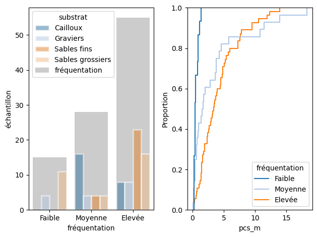
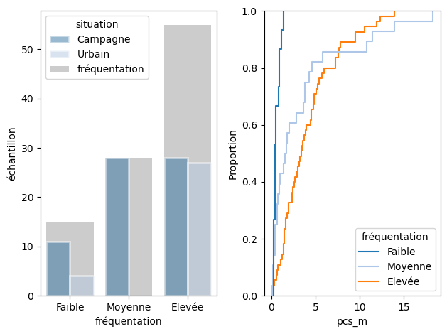
Gérer les covariables indépendents#
Notre intérêt est de prédire les valeurs sur les rives des lacs et de comprendre comment ou si l’une des variables indépendantes a un effet causal sur la variation de la densité des déchets.
La covariance des variables indépendantes peut avoir un effet de confusion sur l’interprétation des résultats et conduire à des prédictions inexactes. Certaines corrélations sont liées aux conditions d’échantillonnage, c’est-à-dire que les plages les plus fréquentées se trouvent dans des zones urbaines ou que les plages de sable sont les plus fréquentées. Il serait très difficile de classer ces corrélations comme causales.
Pour réduire l’effet de ces corrélations non causatives, nous pouvons combiner certaines variables. Ici, nous avons combiné les variables du substrat et de la distance au parking, passant de quatre catégories à deux dans chaque cas.
Réduction de dimensions en combinant des sous-groupes.
Création d’une Variable Composite : combiner des covariables en une seule variable composite si elles représentent collectivement un phénomène sous-jacent unique. Cependant, cette approche simplifie le modèle et peut perdre certaines subtilités quant à la façon dont chaque variable affecte indépendamment la réponse.
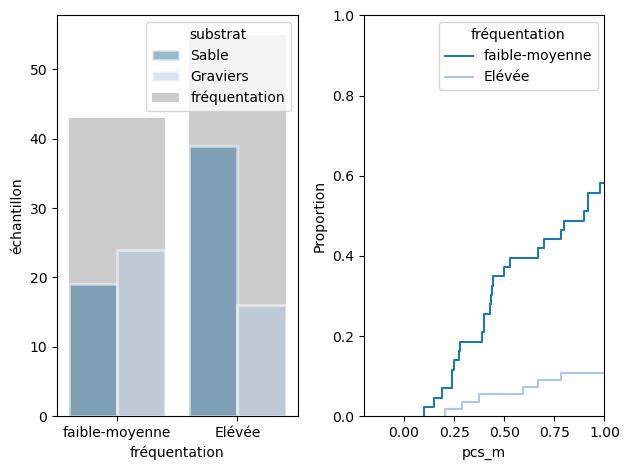
Distribution du nombre d’échantillons par substrat et fréquentation, après fusion du substrat en deux groupes et fusion de fréquentation
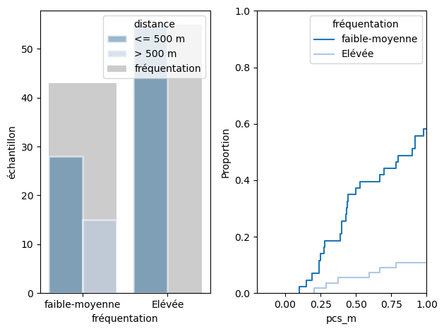
Distribution du nombre d’échantillons par distance au parking et fréquentation, après fusion de la distance en deux groupes et fusion de fréquentation.
Régression avec Forêt Aléatoire (Random Forest Regression)#
Source : scikit-learn random forest
criterion : absolute error
La régression avec forêt aléatoire est une technique d’apprentissage automatique (machine learning) utilisée pour prédire des résultats continus (par opposition aux catégories dans la classification). C’est une méthode d’apprentissage ensembliste, ce qui signifie qu’elle combine les prédictions de plusieurs algorithmes d’apprentissage automatique pour produire des prédictions plus précises.

Plus courants |
Quantiles |
|||||||||||||||||||||||||||||||||||||||||||||||||||||||||||||||||||||||||||||||||
|---|---|---|---|---|---|---|---|---|---|---|---|---|---|---|---|---|---|---|---|---|---|---|---|---|---|---|---|---|---|---|---|---|---|---|---|---|---|---|---|---|---|---|---|---|---|---|---|---|---|---|---|---|---|---|---|---|---|---|---|---|---|---|---|---|---|---|---|---|---|---|---|---|---|---|---|---|---|---|---|---|---|---|
|
|
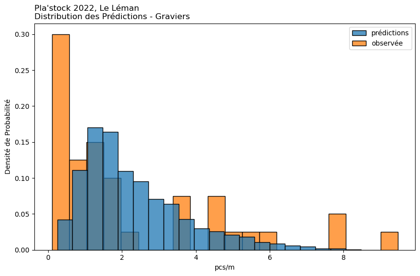
Plus courants |
Quantiles |
|||||||||||||||||||||||||||||||||||||||||||||||||||||||||||||||||||||||||||||||||
|---|---|---|---|---|---|---|---|---|---|---|---|---|---|---|---|---|---|---|---|---|---|---|---|---|---|---|---|---|---|---|---|---|---|---|---|---|---|---|---|---|---|---|---|---|---|---|---|---|---|---|---|---|---|---|---|---|---|---|---|---|---|---|---|---|---|---|---|---|---|---|---|---|---|---|---|---|---|---|---|---|---|---|
|
|
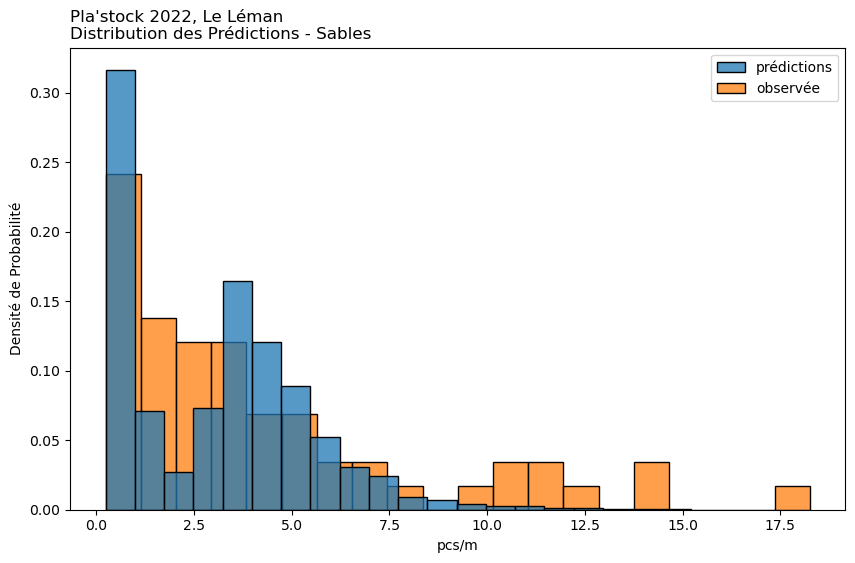
Plus courants |
Quantiles |
|||||||||||||||||||||||||||||||||||||||||||||||||||||||||||||||||||||||||||||||||||||||||||
|---|---|---|---|---|---|---|---|---|---|---|---|---|---|---|---|---|---|---|---|---|---|---|---|---|---|---|---|---|---|---|---|---|---|---|---|---|---|---|---|---|---|---|---|---|---|---|---|---|---|---|---|---|---|---|---|---|---|---|---|---|---|---|---|---|---|---|---|---|---|---|---|---|---|---|---|---|---|---|---|---|---|---|---|---|---|---|---|---|---|---|---|---|
|
|
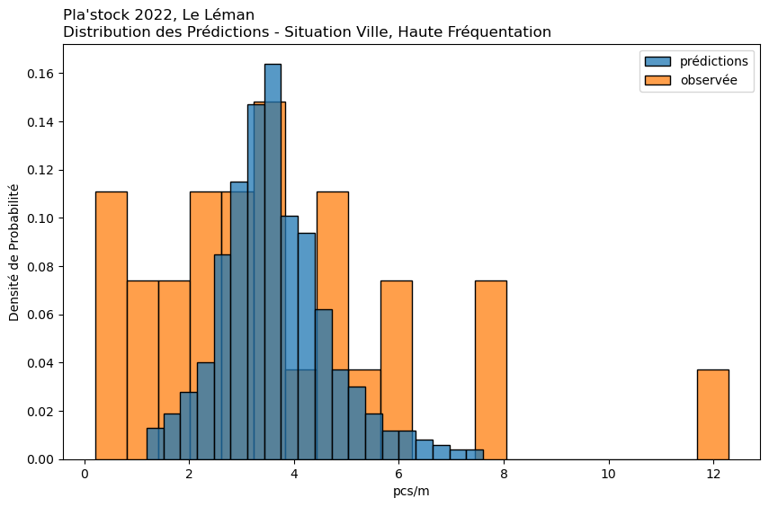
Plus courants |
Quantiles |
|||||||||||||||||||||||||||||||||||||||||||||||||||||||||||||||||||||||||||||||||||||||||||
|---|---|---|---|---|---|---|---|---|---|---|---|---|---|---|---|---|---|---|---|---|---|---|---|---|---|---|---|---|---|---|---|---|---|---|---|---|---|---|---|---|---|---|---|---|---|---|---|---|---|---|---|---|---|---|---|---|---|---|---|---|---|---|---|---|---|---|---|---|---|---|---|---|---|---|---|---|---|---|---|---|---|---|---|---|---|---|---|---|---|---|---|---|
|
|
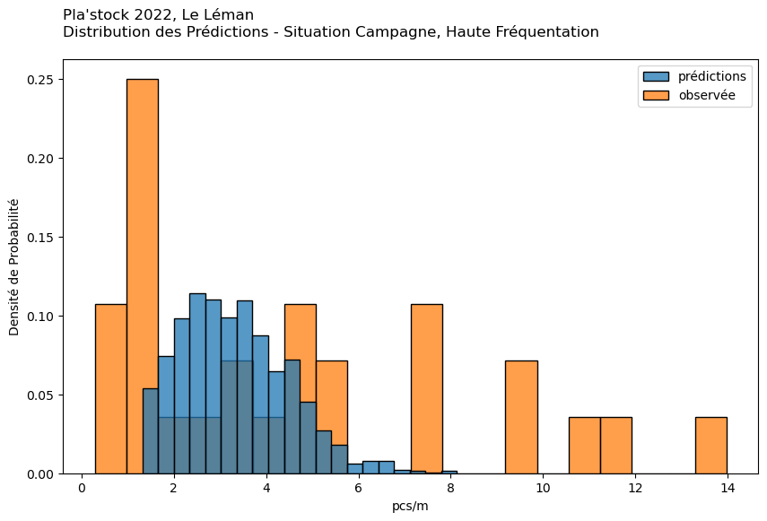
Plus courants |
Quantiles |
|||||||||||||||||||||||||||||||||||||||||||||||||||||||||||||||||||||||||||||||||||||||||||||||||||||||||||||||
|---|---|---|---|---|---|---|---|---|---|---|---|---|---|---|---|---|---|---|---|---|---|---|---|---|---|---|---|---|---|---|---|---|---|---|---|---|---|---|---|---|---|---|---|---|---|---|---|---|---|---|---|---|---|---|---|---|---|---|---|---|---|---|---|---|---|---|---|---|---|---|---|---|---|---|---|---|---|---|---|---|---|---|---|---|---|---|---|---|---|---|---|---|---|---|---|---|---|---|---|---|---|---|---|---|---|---|---|---|---|---|---|---|
|
|
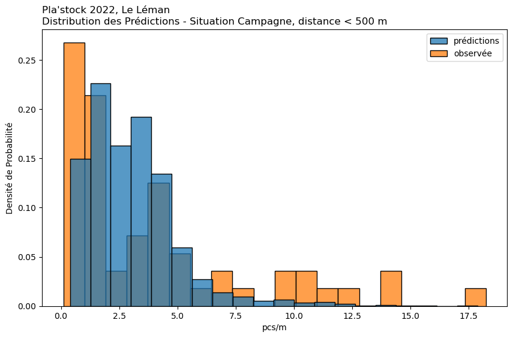
Plus courants |
Quantiles |
|||||||||||||||||||||||||||||||||||||||||||||||||||||||||||||||||||||||||||||||||||||||||||
|---|---|---|---|---|---|---|---|---|---|---|---|---|---|---|---|---|---|---|---|---|---|---|---|---|---|---|---|---|---|---|---|---|---|---|---|---|---|---|---|---|---|---|---|---|---|---|---|---|---|---|---|---|---|---|---|---|---|---|---|---|---|---|---|---|---|---|---|---|---|---|---|---|---|---|---|---|---|---|---|---|---|---|---|---|---|---|---|---|---|---|---|---|
|
|
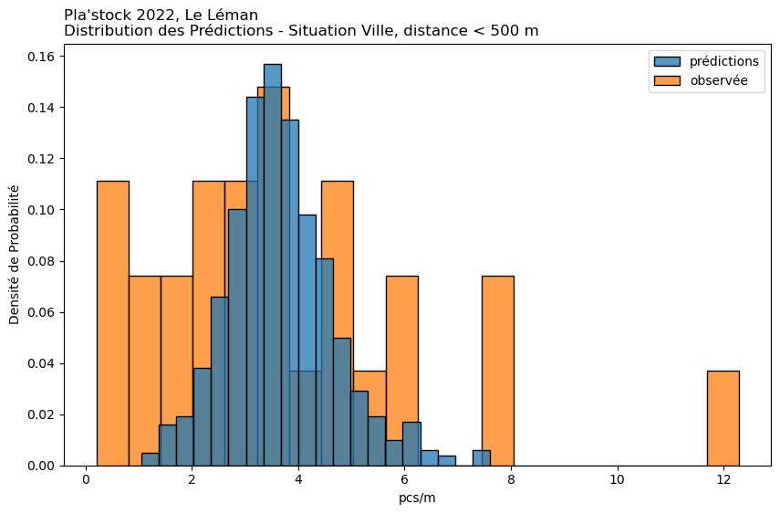
Plus courants |
Quantiles |
|||||||||||||||||||||||||||||||||||||||||||||||||||||||||||||||||||||||||||||||||||||||||||
|---|---|---|---|---|---|---|---|---|---|---|---|---|---|---|---|---|---|---|---|---|---|---|---|---|---|---|---|---|---|---|---|---|---|---|---|---|---|---|---|---|---|---|---|---|---|---|---|---|---|---|---|---|---|---|---|---|---|---|---|---|---|---|---|---|---|---|---|---|---|---|---|---|---|---|---|---|---|---|---|---|---|---|---|---|---|---|---|---|---|---|---|---|
|
|
observée
prédiction
1%
0.15
0.28
25%
0.78
0.83
50%
2.00
2.48
75%
4.57
3.42
99%
14.10
9.06
Moyenne
3.42
2.48
Les modèles ont fait l’objet d’un bootstrap, 100 itérations pour chaque scénario. Les résultats estimés sont la collection de toutes les prédictions de chaque itération.
Par exemple, le tableau intitulé “Gravier” présente les résultats observés et prévus pour les plages ayant un substrat de 3 ou 4.
observée
prédiction
1%
0.12
0.42
25%
0.44
1.28
50%
1.31
1.92
75%
3.68
3.00
99%
8.83
6.69
Moyenne
2.25
2.32
observée
prédiction
1%
0.24
0.27
25%
1.37
0.61
50%
2.95
3.29
75%
5.15
4.55
99%
15.82
10.07
Moyenne
4.23
3.07
observée
prédiction
1%
0.25
1.42
25%
2.14
2.99
50%
3.40
3.53
75%
4.79
4.19
99%
11.13
6.84
Moyenne
3.69
3.64
observée
prédiction
1%
0.39
1.39
25%
1.50
2.41
50%
3.55
3.19
75%
7.25
4.07
99%
13.42
6.53
Moyenne
4.60
3.31
observée
prédiction
1%
0.13
0.55
25%
0.78
1.61
50%
2.37
2.80
75%
5.29
4.00
99%
15.90
10.70
Moyenne
4.02
3.07
observée
prédiction
1%
0.25
1.55
25%
2.14
3.02
50%
3.40
3.58
75%
4.79
4.21
99%
11.13
6.60
Moyenne
3.69
3.66
Approximation Bayésienne par Grille
Approximation Bayésienne par Grille#
Source : hammerdirt
application : solid-waste-team
prior : Résultats de la campagne d’échantillonnage précédente
Cas d’utilisation : Cette méthode est une approche manuelle de l’inférence Bayésienne. Elle est particulièrement utile lorsque vous souhaitez incorporer des croyances antérieures et mettre à jour ces croyances avec des données observées.
Mise en œuvre : Implique la définition d’une grille de valeurs de paramètres et le calcul de la vraisemblance des données observées à chaque point de cette grille. En multipliant par la probabilité a priori et en normalisant, on obtient la distribution a posteriori. Cela peut être fait pour chaque condition séparément ou pour toutes les conditions ensemble, bien que cela soit plus intensif en termes de calcul.
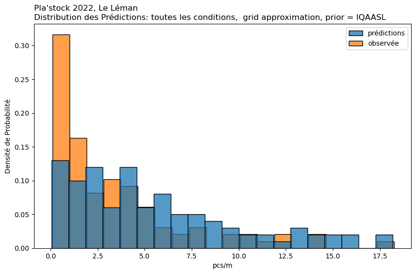
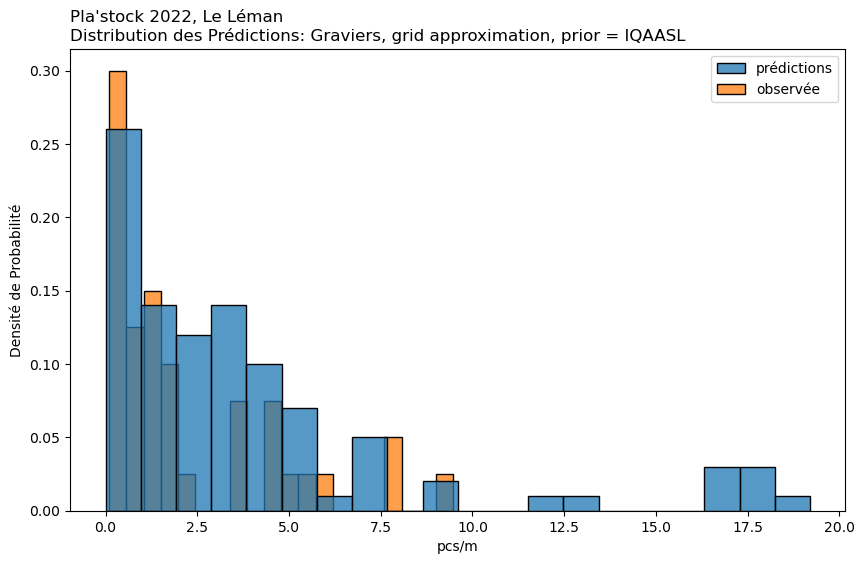
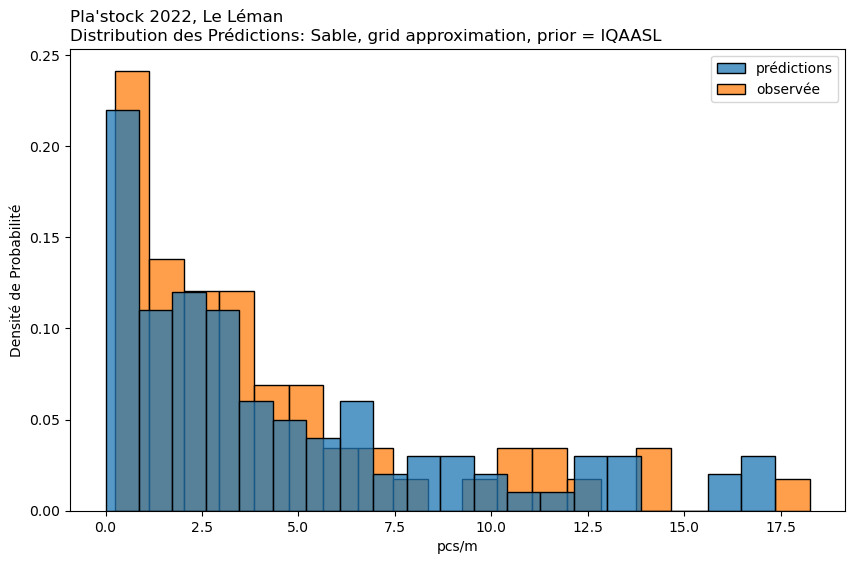
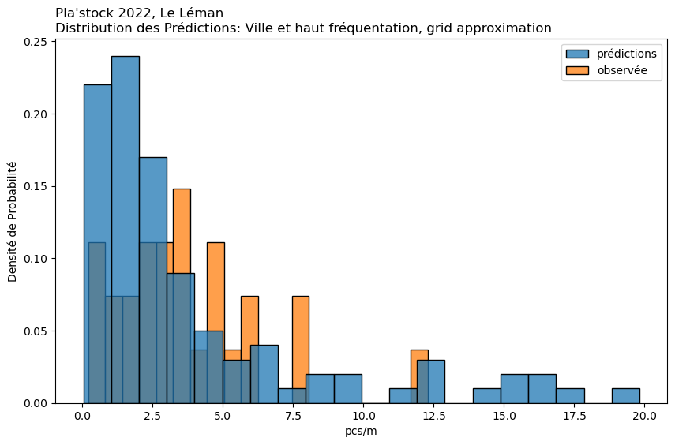
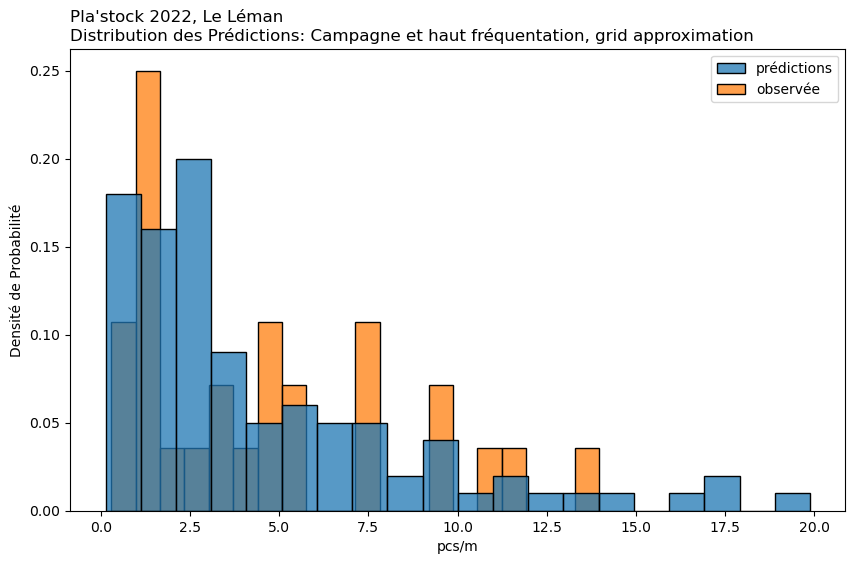
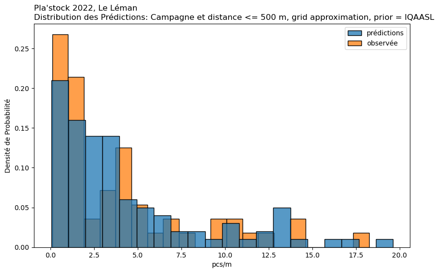
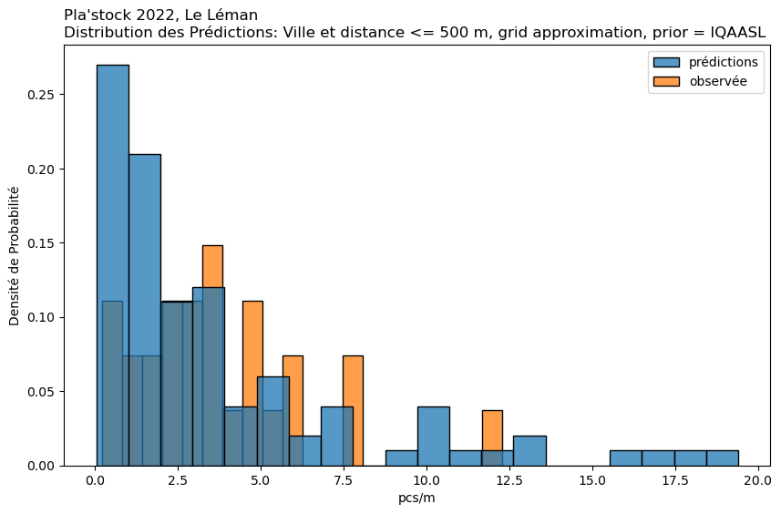
observée
prédiction
1%
0.15
0.04
25%
0.78
1.98
50%
2.00
4.46
75%
4.57
7.54
99%
14.10
17.30
Moyenne
3.42
5.52
Prédictions : Fournit une distribution de valeurs possibles de pcs/m, offrant une idée de la fourchette et de l’incertitude des prédictions. Particulièrement utile lorsque la prise de décision nécessite de comprendre l’incertitude ou la variabilité des prédictions.
observée
prédiction
1%
0.12
0.06
25%
0.44
0.91
50%
1.31
2.80
75%
3.68
4.53
99%
8.83
18.17
Moyenne
2.25
3.95
observée
prédiction
1%
0.24
0.06
25%
1.37
1.02
50%
2.95
2.82
75%
5.15
6.51
99%
15.82
16.84
Moyenne
4.23
4.61
observée
prédiction
1%
0.25
0.17
25%
2.14
1.16
50%
3.40
2.27
75%
4.79
4.54
99%
11.13
17.46
Moyenne
3.69
3.96
observée
prédiction
1%
0.39
0.13
25%
1.50
1.34
50%
3.55
2.99
75%
7.25
6.70
99%
13.42
17.45
Moyenne
4.60
4.42
observée
prédiction
1%
0.13
0.06
25%
0.78
1.17
50%
2.37
2.83
75%
5.29
5.66
99%
15.90
16.80
Moyenne
4.02
4.34
observée
prédiction
1%
0.25
0.04
25%
2.14
0.96
50%
3.40
2.23
75%
4.79
4.78
99%
11.13
18.43
Moyenne
3.69
3.76
Inventaire Pla’stock.#
Show code cell source
t = rc.translate_for_display(plastock_report.inventory, amap=language_maps['fr'], lan='fr')
t['objet'] = t.code.apply(lambda x: codes.loc[x, 'fr'])
t = t[[t.columns[0], t.columns[-1], *t.columns[1:-1]]]
t.set_index(['code', 'objet'], inplace=True)
t.index.name = None
t.style.set_table_styles(table_css_styles).format(**psc.format_kwargs)
| quantité | % du total | pcs/m | taux d'échec | ||
|---|---|---|---|---|---|
| code | objet | ||||
| Gfrags | Fragments de plastique: g80, g79, g78, g77, g76, g75 | 11'221 | 0,41 | 0,72 | 0,97 |
| G27 | Mégots et filtres à cigarettes | 3'089 | 0,11 | 0,15 | 0,79 |
| G30 | Emballages de bonbons, de snacks | 2'080 | 0,08 | 0,15 | 0,74 |
| G106 | Fragments de plastique angulaires <5mm | 1'926 | 0,07 | 0,00 | 0,41 |
| G112 | Pellets industriels (GPI) | 1'526 | 0,06 | 0,00 | 0,36 |
| Gfoams | Fragments de polystyrène expansé: g81, g82, g83 | 1'399 | 0,05 | 0,07 | 0,72 |
| Gcaps | Couvercles en plastique bouteille: G21, G22, G23, G24 | 1'070 | 0,04 | 0,04 | 0,65 |
| G95 | Coton-tige | 1'040 | 0,04 | 0,03 | 0,54 |
| G74 | Mousse de plastique pour l'isolation thermique | 406 | 0,01 | 0,00 | 0,38 |
| G89 | Déchets de construction en plastique | 380 | 0,01 | 0,00 | 0,24 |
| G31 | Bâtonnets de sucette | 379 | 0,01 | 0,02 | 0,54 |
| G103 | Fragments de plastique arrondis <5mm | 375 | 0,01 | 0,00 | 0,26 |
| G117 | Polystyrène < 5mm | 311 | 0,01 | 0,00 | 0,34 |
| G70 | Cartouches de fusil de chasse | 199 | 0,01 | 0,00 | 0,39 |
| G114 | Films <5mm | 197 | 0,01 | 0,00 | 0,12 |
| G50 | Cordon < 1cm | 172 | 0,01 | 0,00 | 0,44 |
| G113 | Filaments <5mm | 169 | 0,01 | 0,00 | 0,31 |
| G932 | Bio-perles, micro plastique pour les eaux usées | 161 | 0,01 | 0,00 | 0,36 |
| G35 | Pailles et agitateurs | 159 | 0,01 | 0,00 | 0,40 |
| G67 | Bâche, feuille plastique industrielle | 146 | 0,01 | 0,00 | 0,07 |
| G66 | Sangles/bandes ; fermeture de paquet en plastique dur | 114 | 0,00 | 0,00 | 0,30 |
| G905 | Pince à cheveux, accessoires personnels | 108 | 0,00 | 0,00 | 0,44 |
| G211 | Autres articles médicaux: compresses, pansements | 105 | 0,00 | 0,00 | 0,39 |
| G165 | Bâtons de glace, cure-dents, baguettes chinoises | 93 | 0,00 | 0,00 | 0,11 |
| G32 | Jouets et faveurs de fête | 63 | 0,00 | 0,00 | 0,22 |
| G194 | Câbles, fil métallique | 58 | 0,00 | 0,00 | 0,24 |
| G131 | Bandes élastiques | 57 | 0,00 | 0,00 | 0,24 |
| G125 | Ballons et bâtonnets de ballons | 51 | 0,00 | 0,00 | 0,24 |
| G922 | Étiquettes, codes à barres | 43 | 0,00 | 0,00 | 0,15 |
| G33 | Gobelets, couvercles, mousse à usage unique et plastique dur | 42 | 0,00 | 0,00 | 0,16 |
| G159 | Bouchon de liège | 29 | 0,00 | 0,00 | 0,13 |
| G73 | Articles et pièces en mousse (pas d'emballage) | 24 | 0,00 | 0,00 | 0,06 |
| G53 | Filets et pièces < 50cm | 23 | 0,00 | 0,00 | 0,05 |
| G132 | Bobine de pêche | 19 | 0,00 | 0,00 | 0,12 |
| G2 | Sacs | 19 | 0,00 | 0,00 | 0,15 |
| G10 | Emballage fast food | 18 | 0,00 | 0,00 | 0,09 |
| G34 | Couverts, assiettes et plateaux palstique | 18 | 0,00 | 0,00 | 0,14 |
| G926 | Du chewing-gum | 15 | 0,00 | 0,00 | 0,10 |
| G97 | Rafraîchisseurs de toilettes | 15 | 0,00 | 0,00 | 0,08 |
| G139 | Sacs à dos | 15 | 0,00 | 0,00 | 0,01 |
| G100 | Médical conteneurs/tubes/ emballages | 13 | 0,00 | 0,00 | 0,09 |
| G12 | Récipients de soins personnels non destinés à la plage | 13 | 0,00 | 0,00 | 0,03 |
| G901 | Masque médical, synthétique | 12 | 0,00 | 0,00 | 0,08 |
| G135 | Vêtements, chaussures, chapeaux et gants | 9 | 0,00 | 0,00 | 0,07 |
| G26 | Allume-cigarettes | 9 | 0,00 | 0,00 | 0,08 |
| G137 | Serviettes et chiffons | 8 | 0,00 | 0,00 | 0,05 |
| G7 | Bouteilles à boisson < = 0,5L | 7 | 0,00 | 0,00 | 0,07 |
| G28 | Stylos, couvercles, porte-mines | 7 | 0,00 | 0,00 | 0,05 |
| G931 | Ruban pour barrière, police, construction | 7 | 0,00 | 0,00 | 0,04 |
| G144 | Tampons | 6 | 0,00 | 0,00 | 0,04 |
| G145 | Autres textiles | 6 | 0,00 | 0,00 | 0,05 |
| G90 | Pots de fleurs en plastique | 6 | 0,00 | 0,00 | 0,04 |
| G126 | Boules en caoutchouc | 6 | 0,00 | 0,00 | 0,04 |
| G48 | Corde, synthétique | 5 | 0,00 | 0,00 | 0,04 |
| G99 | Seringues - aiguilles | 5 | 0,00 | 0,00 | 0,04 |
| G29 | Peignes, brosses et lunettes de soleil | 4 | 0,00 | 0,00 | 0,03 |
| G25 | Tabac emballages en plastique | 4 | 0,00 | 0,00 | 0,03 |
| G937 | Appâts à phéromones pour les vignobles | 4 | 0,00 | 0,00 | 0,03 |
| G128 | Pneus et courroies | 3 | 0,00 | 0,00 | 0,01 |
| G54 | Filets et pièces > 50cm | 3 | 0,00 | 0,00 | 0,03 |
| G929 | Électronique et pièces ; capteurs, écouteurs | 3 | 0,00 | 0,00 | 0,03 |
| G39 | Gants | 3 | 0,00 | 0,00 | 0,02 |
| G4 | Petits sacs en plastique ; congélateur, zip-lock | 2 | 0,00 | 0,00 | 0,02 |
| G101 | Sac pour déjections canines | 2 | 0,00 | 0,00 | 0,02 |
| G914 | Trombones, épingles à linge, articles utilitaires en plastique | 2 | 0,00 | 0,00 | 0,02 |
| G127 | Bottes en caoutchouc | 2 | 0,00 | 0,00 | 0,01 |
| G136 | Chaussures | 2 | 0,00 | 0,00 | 0,02 |
| G129 | Chambres à air et feuilles de caoutchouc | 1 | 0,00 | 0,00 | 0,01 |
| G148 | Boîtes en carton | 1 | 0,00 | 0,00 | 0,01 |
| G155 | Tubes et fragments de papier: feux d'artifice | 1 | 0,00 | 0,00 | 0,01 |
| G18 | Caisses/paniers | 1 | 0,00 | 0,00 | 0,01 |
| G102 | Tongs | 1 | 0,00 | 0,00 | 0,01 |
| G133 | Préservatifs, y compris emballage | 1 | 0,00 | 0,00 | 0,01 |
Git repo: https://github.com/hammerdirt-analyst/plastock.git
Git branch: main
matplotlib: 3.8.2
numpy : 1.26.3
seaborn : 0.13.1
pandas : 2.0.3